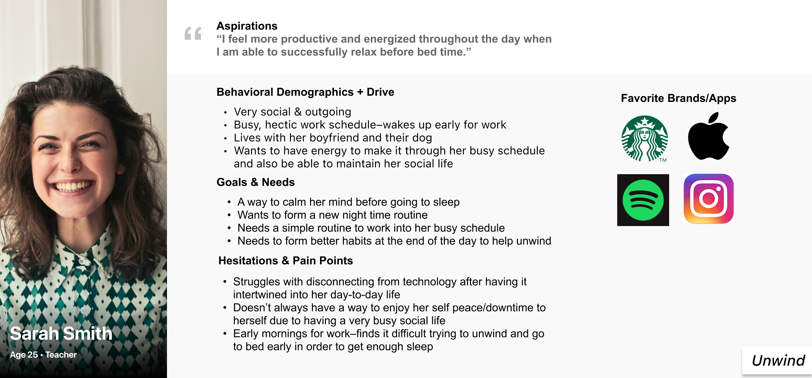

Definiton and Ideation
User Persona
Ezra was the basis point of research from the beginning serving as the proto-persona that evolved as data was gathered and condensed into more finite points in moving forward with the eventual creation of the Tern app. The experience of the app as we progress to it was made with Ezra as the user in mind.
I Like, I Wish, What If Method
This served as a brainstorm of constructive feedback from a diverse group of users that helped in amassing a number ideas that could eventually be included within an app based on feasability.
Feature Prioritization Matrix
This matrix was used to gather feedback from a number of users on features they would love to see within a traveling app and which features should take precedence over others.
Storyboard
A sequence of events representing the issue that needs to be solved and the resolution for our user Ezra Miles.

User Flow
The path taken to complete a particular given task within the app.